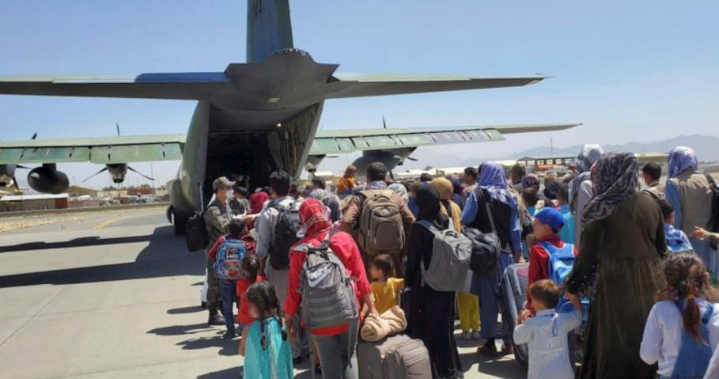

Chile avanza en las gestiones para acoger a más de 300 refugiados afganos
Noticias

La Cancillería de Chile comunicó que ya se están realizando gestiones para facilitar el desplazamiento de afganos que corren peligro debido a la victoria talibán en Afganistán, para poder ser acogidos en nuestro país. Así lo afirmó el Ministerio de Relaciones Exteriores en un comunicado donde se detallan los casos que se estarían revisando. Entre ellos destaca Jorge Said, periodista chileno, y Dawari Parwin, estudiante afgana de periodismo que tiene familiares en Chile. Ambos lograron salir en las últimas horas desde el aeropuerto de Kabul en un vuelo hacia Torrejón, España, desde donde podrán volar a Santiago. Parwin, en tanto, recibirá por parte del Servicio Nacional de Migraciones el estatus de refugiada apenas llegue a Chile. Un caso similar será el de la hermana de Zahra Habibi, estudiante de medicina de la Universidad de Chile, quien también será recibida en nuestro país como refugiada. Según se indicó, la mujer se encuentra en Pakistán, por lo que Cancillería solicitó apoyo al Gobierno de Argentina para que su embajador en Pakistán gestione una visa que le permita llegar hasta Islamabad, desde donde podrá tomar un vuelo hacia Santiago.
Más de 300 afganos refugiados
Asimismo, la comunidad afgana en Chile entregó a la Cancillería un listado de 270 personas a quienes el Gobierno dará acogida. Sin embargo, en sus casos el camino no es tan sencillo. Esto, porque el acuerdo con el Gobierno chileno es que ellos deben intentar salir de Afganistán y desplazarse a los países más cercanos donde nuestro país cuenta con consulados, como Irán, Emiratos Árabes Unidos e India, donde se les entregará un salvoconducto que les permitirá llegar a Chile. Una vez en nuestro país, serán acogidos bajo distintos mecanismos. Por ejemplo, quienes tengan vínculo familiar directo, recibirán residencia temporaria por vínculo familiar. Mientras quienes consigan contratos laborales otorgados por la comunidad afgana en Chile -que se comprometió a ofrecerles trabajo- recibirán residencia temporaria por contrato de trabajo. Quienes no tengan ninguna de las anteriores, serán acogidos bajo el estatus de refugiados.